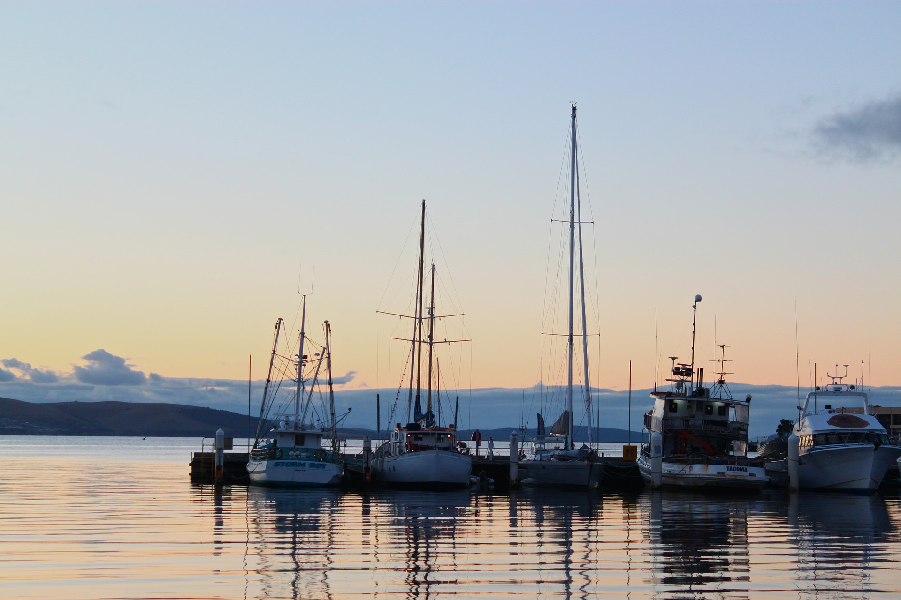
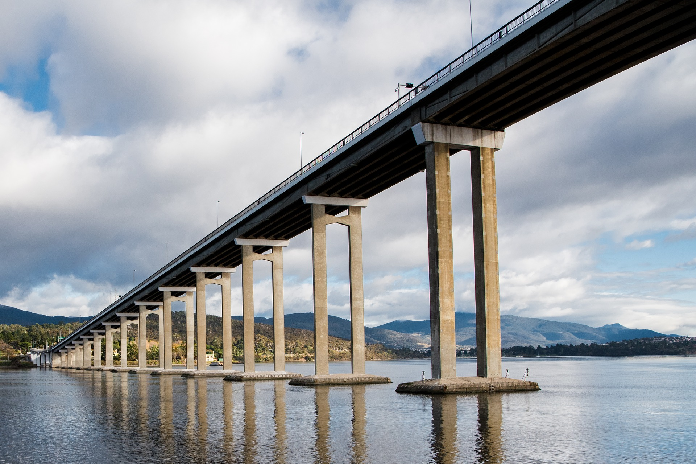
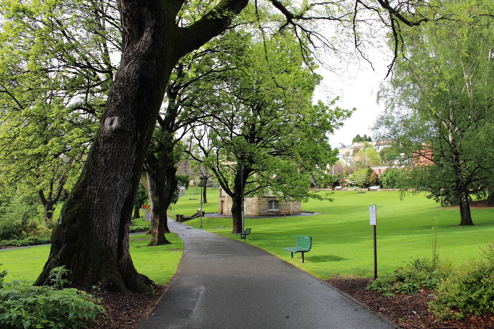

<!DOCTYPE html>
<html lang="en">
    <head>
        <meta charset="UTF-8">        
        <meta name="viewport" content="width=device-width">        
        <title>Anh's Life Blog</title>
        <link href="https://fonts.googleapis.com/css?family=Quicksand&display=swap" rel="stylesheet">
        <!-- <link rel="stylesheet" href="css/fontawesome/css/fontawesome.min.css"> -->
        <!-- <link href="https://maxcdn.bootstrapcdn.com/font-awesome/4.1.0/css/font-awesome.min.css" rel="stylesheet"> -->
        <!-- <link href="css/fontawesome/css/fontawesome.min.css" rel="stylesheet"> -->
        <!-- <link href="/css/fontawesome/css/font-awesome2.min.css" rel="stylesheet"> -->
        <link rel="stylesheet" href="/css/fontawesome/css/all.min.css">
        <!-- <link href="css/fontawesome/css/font-awesome_older.min.css" rel="stylesheet"> -->
        <link rel="stylesheet" href="css/style.css">        
    </head>

    <body>
        <header class="background">
            <h1>Anh's life blog</h1>
            <nav>
                <ul>
                    <li><a href="index.html">Home</a></li>
                    <li><a href="aboutme.html">About me</a></li>
                    <li><a href="blog.html">Blog</a></li>
                </ul>
            </nav>
        </header>

        <!-- <div class="journey-image" >
            <p class="journey-text background" >Hi, I'm Anh. <br> Follow me on my journey around the <em>Tasmania.</em></p>
        </div> -->

        <div class="wrapper">
            <main>
                <article class="background">
                    <header>
                        <h2>Hobart, beautiful city</h2>
                        <ul>
                            <li>Author: <em>Anh</em></li>
                            <li>Tagged: <em>Hobart, beautiful city</em></li>
                            <li>Created: <em>1 days ago</em></li>
                        </ul>
                    </header>
                    <section>
                        
                        <p>Hobart, capital of Australia's island state of Tasmania, sits on the River Derwent. At its fashionable Salamanca Place, old sandstone warehouses host galleries and cafes. Nearby is Battery Point, a historic district with narrow lanes and colonial-era cottages. The city's backdrop is 1,270m-high Mount Wellington, with sweeping views, plus hiking and cycling trails.</p>
                        <a href="">Read more ...</a>    
                    </section>
                    <header>
                        <h2>Tasman bridge</h2>
                        <ul>
                            <li>Author: <em>Anh</em></li>
                            <li>Tagged: <em>Tasman bridge</em></li>
                            <li>Created: <em>2 days ago</em></li>
                        </ul>
                    </header>
                    <section>
                        
                        <p>The Tasman Bridge is a five-lane bridge crossing the Derwent River, near the CBD of Hobart, Tasmania. The bridge has a total length (including approaches) of 1,396 metres (4,580 ft). As part of the Tasman Highway (A3), it provides the main traffic route from the CBD (on the western shore) to the eastern shore. It has a pedestrian footway on each side, but no dedicated lane for bicycles. However, steps to the pedestrian footway have recently been replaced with ramps.</p>
                        <a href="">Read more ...</a>    
                    </section>
                    <header>
                        <h2>Saint Davids Park</h2>
                        <ul>
                            <li>Author: <em>Anh</em></li>
                            <li>Tagged: <em>Saint Davids Park</em></li>
                            <li>Created: <em>3 days ago</em></li>
                        </ul>
                    </header>
                    <section>
                        
                        <p>A short walk up from Salamanca Place, St David's Park is located on the site of St David's cemetery. St David's Park is a formal English style walled park and dates from the beginning of European settlement in 1804. This was the site of the first burial ground in Tasmania, marked out by Lieutenant-Governor David Collins and the Reverend Robert Knopwood in April 1804. At that time the burial ground was 'a place of real seclusion and rare beauty' crossed by two crystal streams with fine old blackwood trees dotted through the groves of wattle on the high ground, located away from the main settlement and surrounded by an 'exquisite natural shrubbery'. It was called St David's Cemetery as a mark of respect to the memory of the Colony's founding Lt Governor, Lt Col David Collins. Collins himself was buried there in March 1810</p>
                        <a href="">Read more ...</a>    
                    </section>
                </article>
            </main>
            <aside>
                <section class="sidebar-widget background">
                    <h2>Follow me on:</h2>
                    <hr>
                    <div class="social">
                        <i class="fab fa-facebook-square"></i>
                        <i class="fab fa-instagram-square"></i>
                        <i class="fab fa-twitter-square"></i>
                        <i class="fab fa-pinterest-square"></i>
                    </div>
                </section>
                <section class="sidebar-widget background">
                    <table>
                        <thead>
                            <tr>
                                <th>
                                    <h2>Countries to visit...</h2>
                                </th>
                            </tr>
                        </thead>
                        <tbody>
                            <tr>
                                <td>Mexico</td>
                                <!-- <td>&#10003;</td> -->
                            </tr>
                            <tr>
                                <td>Vietname</td>
                                <td>&#10003;</td>
                            </tr>
                            <tr>
                                <td>Thailand</td>
                                <td>&#10003;</td>
                            </tr>
                            <tr>
                                <td>Cambodia</td>
                                <td>&#10003;</td>
                            </tr>
                            <tr>
                                <td>Australia</td>
                                <td>&#10003;</td>
                            </tr>
                            <tr>
                                <td>China</td>
                                <!-- <td>&#10003;</td> -->
                            </tr>
                            <tr>
                                <td>Nepal</td>
                                <!-- <td>&#10003;</td> -->
                            </tr>
                        </tbody>
                    </table>
                </section>
            </aside>
        </div>

    </body>
</html>